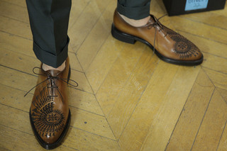
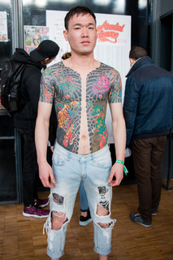

Le tattoo jusqu’au bout des pieds

Pour sa prochaine collection automne-hiver 2016-17, la marque italienne Berlutti à inviter le célèbre tatoueur Scott Campbell a tatouer un design unique sur ses chaussures de cuir.
C’est au coeur d’un décor de road trip texan que la dernière collection Berlutti se présente. Le créateur italien a puisé son inspiration dans les terres texanes à la suite d’un voyage au pays de l’Oncle Sam. Sur les poduims, les mannequins défilent à même un sable noir rappelant les terres texanes. Autre détail troublant, le cou, les bras et les jambes des mannequins sont tatoués de mystérieux symboles ethniques et géométriques. Des tatouages créés pour l’occasion par le plus célèbre des tatoueurs, Scott Campbell. Des dessins originaux que l’on retrouve également sur le cuir des souliers ou brodés sur les sacs de la collection Berlutti. L’artiste tatoueur, qui n’est pas à sa première collaboration dans le milieu de la mode, est aussi connu pour être le tatoueur du designer Marc Jacobs, ou des stars Courtney Love et Orlando Bloom.
La collection Berlutti x Scott Campbell est disponible dans les boutiques Berlutti.
Les tatouages japonais

Lors de mon passage sur le Mondial du Tatouage, j’ai flashé sur ces tatouages japonais qui recouvre quasi l’entièreté du torse et dos du jeune homme. On retrouve sur son corps les motifs emblématique du tatouage Japonais tel que les samouraïs, tigres ou dragons. Le tigre et le dragon sont tout deux considérés comme symbole de force protectrice.
A l’origine du tatouage Japonais, le tatouage était utilisé comme emblème des clans de samouraïs mais également un moyen d’identification lors des guerres civiles.
Plus réel que réel…
Etonnants tatouages sur les jambes de Luca. Dans un style plus réaliste que jamais, le jeune homme italien a opté pour une inspiration africaine afin d’illustrer les thèmes qui lui sont chères. On retrouve donc une maman gorille et son bébé qui immortalise le lien qu’il entretien avec sa mère. A l’intérieur de la jambe, le visage d’une femme africaine qui se tient la tête entre les mains. L’exécution du tatouage est impressionnante et on a peine à croire que c’est un tatouage tant j’ai l’impression que c’est vivant.
Ces magnifiques tatouages ont été réalisés par le tatoueur italien Onzo, gagnant du deuxième prix du plus beau tatouage noir lors du Mondial du Tatouage. Impressionné par les tatouages vus sur Luca, je me suis empressé d’aller voir le travail de l’artiste tatoueur sur la toile. A ma grande surprise, je n’ai pas retrouvé d’univers propre à l’artiste mais une exécution impeccable des dessins demandés. Forcément déçu car je m’attendais à retrouver de grands dessins prenants comme ceux de Luca… bien qu’on ne peux que saluer l’excellent travail du tatoueur.
Exploring korea’s illegal tattooing scene
Découvrez la scène underground du tatouage en Corée avec Grace Neutral et I-D Magazine.
Nous aimons vraiment la dernière vidéo publiée par i-D Magazine avec l’artiste de tatouage et activiste grâce neutre.
L’artiste explore la façon dont les jeunes générations se retrouvent confrontés idées traditionnelles autour de la beauté et de l’image du corps à travers le monde. Dans la vidéo tournés par l’équipe de i-D, on peux suivre la princesse « alien » couverte de tatouage partir en Corée du Sud afin de rencontrer les jeunes de Séoul et débattre sur les idéaux de la beauté dite traditionnelle. Bien que la chirurgie esthétique soit accepté de tous et notamment pour les adolescents, il est illégal d’être tatoueur-artiste et mal vu d’être tatoué. Du studio souterrain de tatouage à une soirée dans un club caché, Grace rencontre de jeunes Coréens du Sud qui s’opposent aux idéaux de beauté imposés par leur pays.